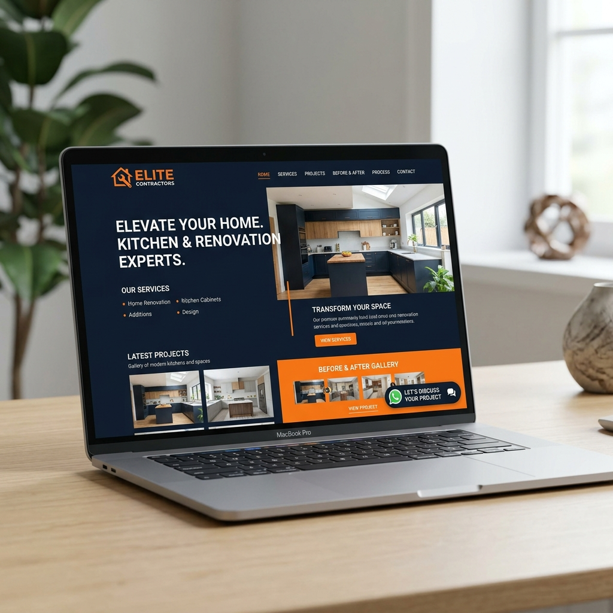

Paparkan portfolio projek, testimoni pelanggan, perkhidmatan dan terima pertanyaan terus melalui WhatsApp menggunakan website yang dibina khas untuk bisnes renovasi.
Sesuai untuk syarikat renovasi, kontraktor, interior designer, kitchen cabinet, plaster ceiling, awning, roofing dan perunding renovasi.

Mengapa ketiadaan website syarikat renovasi profesional menyukarkan anda untuk menarik perhatian pelanggan premium di internet?
Pelanggan baru sukar mencari bukti hasil kerja lama anda. Tiada tapak berpusat untuk meneliti kualiti pertukangan dan reka bentuk yang pernah anda siapkan.
Setiap kali pelanggan minta contoh projek, anda terpaksa menggali semula gambar lama dalam galeri telefon dan menghantarnya secara manual satu per satu.
Hanya menggunakan profil peribadi media sosial tanpa domain rasmi menurunkan nilai persepsi (brand value) syarikat anda di mata prospek yang bermodal besar.
Industri renovation dipenuhi isu kontraktor lari. Tanpa profil syarikat dan portfolio yang meyakinkan secara telus, pelanggan takut untuk membayar wang pendahuluan (deposit).
Sekiranya akaun Facebook page disekat (ban) atau jangkauan organik (reach) merosot, aliran masuk pelanggan baru (leads) syarikat anda akan terus terhenti begitu sahaja.
Tiada sistem pengurusan lead yang kemas. Pertanyaan prospek bertaburan di PM, ruangan komen Facebook, TikTok, dan mesej peribadi WhatsApp, menjadikannya sukar dikesan.
Bagaimana memiliki sebuah website contractor Malaysia tersendiri mampu mengubah cara pelanggan melihat dan menghubungi perniagaan anda.
Paparkan portfolio kerja dengan tersusun mengikut kategori seperti reka bentuk dapur, ruang tamu, tandas, plaster ceiling, atau bahagian bumbung untuk rujukan prospek.
Tunjukkan transformasi ajaib hasil kerja anda sebelum dan selepas renovasi. Visual perbandingan berkualiti tinggi ini adalah magnet penarik lead yang sangat berkesan.
Pamerkan ulasan dan kepuasan pemilik rumah terdahulu untuk meruntuhkan keraguan prospek baru dan mengukuhkan tahap kredibiliti pertukangan syarikat anda.
Terima pertanyaan sebut harga (quotation) atau rundingan awal terus ke dalam telefon bimbit anda. Memudahkan proses rundingan pantas secara one-on-one.
Wujudkan nama domain rasmi dan reka bentuk yang kemas. Syarikat anda akan diletakkan setaraf dengan syarikat hiasan dalaman dan kontraktor korporat yang dipercayai.
Kongsikan satu pautan (link) sahaja kepada mana-mana prospek di WhatsApp atau media sosial untuk membiarkan mereka meneroka profil syarikat dan hasil kerja anda secara kendiri.
Setiap website renovation Malaysia yang kami bina dimuatkan dengan ciri-ciri premium khusus untuk menutup jualan dan menarik pelanggan.
Ruangan lengkap memperkenalkan visi, lesen CIDB (jika ada), pengalaman, dan kekuatan pasukan kontraktor anda.
Galeri hasil kerja mengikut jenis kediaman, tersusun kemas untuk memudahkan pelanggan menapis idea renovasi.
Paparan visual beresolusi tinggi dengan kesan zoom automatik bagi menunjukkan kehalusan pertukangan dan perincian bahan.
Elemen interaktif gelongsor (slider) atau paparan bersebelahan untuk membandingkan transformasi sebelum dan selepas diubahsuai.
Butang terapung (floating) WhatsApp memudahkan pelanggan menghantar pesanan sebut harga pada bila-bila masa.
Borang tempahan sebut harga bersepadu untuk pelanggan mengisi butiran spesifik kawasan, bajet, dan idea mereka.
Antaramuka yang dioptimumkan khas untuk skrin telefon pintar bagi memudahkan 90% prospek mudah alih meneroka website.
Kod pengaturcaraan mesra enjin carian Google untuk membantu menaikkan kedudukan website syarikat renovasi anda di internet.
Demo ini menunjukkan bagaimana website profesional boleh digunakan untuk memaparkan portfolio projek, perkhidmatan, testimoni pelanggan dan menjana pertanyaan melalui WhatsApp.
Penyelesaian pemasaran berkesan untuk pelbagai sektor dalam industri pengubahsuaian dan pembinaan rumah di Malaysia.
Syarikat pengubahsuaian yang menguruskan projek reka & bina (design and build) rumah secara menyeluruh.
Kontraktor am pembinaan dan penambahbaikan struktur rumah yang memerlukan tapak portfolio rasmi.
Pereka hiasan dalaman (interior designer) yang mahu menonjolkan estetika lukisan 3D dan hasil transformasi kediaman.
Pakar kabinet dapur dan almari pakaian yang memerlukan galeri tersusun untuk contoh material dan reka bentuk ruang.
Syarikat pemasangan siling kapur dan dekorasi siling yang ingin mempamerkan kualiti kemasan siling rumah.
Kontraktor atap, awning, bumbung, waterproofing dan pembaikan kebocoran yang mahu menjangkau lebih ramai pemilik rumah.
Penyedia perkhidmatan pendawaian elektrik, pencahayaan, aircond dan smart home system.
Perunding pengubahsuaian yang membantu pelanggan merancang pelan, bajet dan konsep renovasi kediaman.
Syarikat pengurusan projek pembinaan yang menyelaraskan sub-kontraktor, bajet dan jadual kerja renovasi.
Hanya dalam 4 fasa ringkas untuk membolehkan perniagaan renovasi anda mempunyai laman web sendiri di internet.
Klik butang WhatsApp dan bincang dengan kami tentang rancangan dan keperluan website anda.
Sediakan gambar portfolio terbaik projek sebelum ini, logo perniagaan, dan senarai maklumat perkhidmatan.
Pasukan kami akan memasang sistem, menyusun kandungan, menyunting visual before/after, dan mengoptimumkan SEO.
Lakukan semakan terakhir, berikan maklum balas, dan website anda sedia dilancarkan secara rasmi!
Tawaran bajet rendah yang direka khusus bagi membantu kontraktor kecil dan sederhana di Malaysia naik taraf pemasaran digital.
Bayaran Sekali Sahaja (Sebut Harga Standard)
Kami mengumpulkan soalan-soalan popular daripada pengusaha industri renovasi untuk membantu anda membuat pilihan terbaik.
Selain daripada laman web kontraktor renovasi, kami juga membina reka bentuk template landing page premium khusus untuk industri berbeza.
Sama ada anda syarikat renovasi, kontraktor atau perunding renovasi, website profesional membantu meningkatkan kepercayaan pelanggan dan memudahkan mereka menghubungi anda.